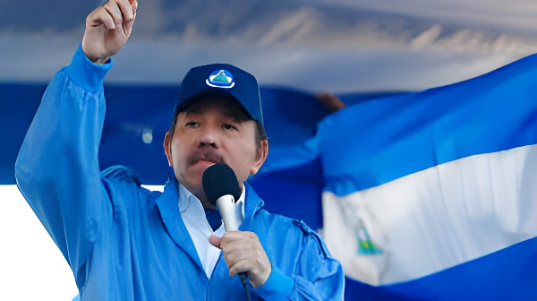

Héros de la révolution sandiniste de 1979, Daniel Ortega gouverne le Nicaragua d'une main de fer depuis 2007. Sa dérive autoritaire, accélérée par la répression du soulèvement de 2018, a transformé l'un des symboles de la gauche latino-américaine en un régime familial que les démocraties occidentales qualifient désormais ouvertement de dictature.
Daniel Ortega incarne une trajectoire politique paradoxale. Commandant du Front sandiniste de libération nationale (FSLN) qui renversa la dictature Somoza en 1979, il fut président une première fois de 1985 à 1990, avant d'accepter une transition démocratique après sa défaite électorale face à Violeta Chamorro. Il revient au pouvoir en 2007, remportant des élections compétitives, mais transforme progressivement le Nicaragua en système autoritaire personnel.
À ses côtés, son épouse Rosario Murillo — vice-présidente depuis 2017 — devient le véritable co-dirigeant du pays, concentrant entre leurs deux mains un pouvoir sans précédent depuis la dictature des Somoza. La presse internationale parle désormais de «dictature conjugale».
La rupture s'opère en avril 2018. Une réforme de la sécurité sociale déclenchant une hausse des cotisations enflamme les rues : étudiants, paysans et retraités se mobilisent dans une contestation inédite depuis la révolution. La réponse du gouvernement est brutale : les paramilitaires pro-Ortega, accompagnant la police, ouvrent le feu sur les manifestants. En moins de trois mois, plus de 300 personnes sont tuées, des milliers arrêtées ou torturées, et plus de 100 000 Nicaraguayens fuient vers le Costa Rica et les États-Unis.
Cet épisode marque la fin de toute ambiguïté : Ortega ne cherche plus à maintenir une façade démocratique. Dès lors, les institutions sont vidées de leur substance — cours de justice, parlement, médias — et mises au service exclusif du maintien du pouvoir.
Soulèvement populaire déclenché par la réforme des retraites. Répression violente : plus de 300 morts, milliers d'arrestations. Début de l'exil massif.
Amnistie factice suivie de nouvelles arrestations. Loi «Ley de Amnistía» utilisée pour libérer policiers accusés de violations, non les prisonniers politiques. Dissolution de centaines d'ONG.
Arrestation de sept candidats présidentiels potentiels avant l'élection de novembre. Ortega remporte 75,9 % des voix face à une opposition décimée. Condamnation internationale unanime.
Expulsion de 222 prisonniers politiques vers les États-Unis, dont des figures historiques de la gauche nicaraguayenne. Déchéance de leur nationalité prononcée immédiatement après.
Rupture des relations diplomatiques avec le Vatican. Expulsion de l'ambassadeur apostolique. L'Église catholique, cible de l'État, voit plusieurs évêques arrêtés ou contraints à l'exil.
Accélération de la répression. Fermeture de l'université jésuite UCA. Arrestation du cardinal Álvaro Leonor. Saisie des biens de l'Église. Plus de 3 500 ONG dissoutes au total depuis 2018.
Ortega a su instrumentaliser l'appareil juridique pour légitimer sa répression. Plusieurs lois d'exception ont été adoptées depuis 2020 : la loi sur les «agents étrangers» (2020), calquée sur la législation russe, oblige ONG et journalistes financés de l'étranger à s'enregistrer comme «agents étrangers», sous peine de dissolution. La loi sur la «trahison à la patrie» (2021) permet d'emprisonner quiconque appelle à des sanctions internationales contre le gouvernement.
L'Église catholique est devenue la cible privilégiée de la répression depuis 2022, en raison de son rôle de médiateur lors du soulèvement de 2018. L'évêque Rolando Álvarez a été arrêté puis expulsé ; les écoles et radios catholiques fermées ; plusieurs prêtres condamnés à de lourdes peines de prison pour «déstabilisation».
| Indicateur | Avant 2018 | 2026 |
|---|---|---|
| Prisonniers politiques | Rares cas isolés | Centaines (flux continu) |
| Médias indépendants | Partiellement actifs | Tous fermés ou en exil |
| ONG dissoutes | Quelques dizaines | 3 500+ |
| Exilés nicaraguayens | ~50 000 | ~700 000 |
| Classement liberté presse | Position moyenne | Parmi les pires mondiaux |
Isolé des démocraties occidentales, Ortega a resserré ses alliances avec Moscou, Pékin et La Havane. Le Nicaragua est l'un des rares États à avoir reconnu l'indépendance des républiques séparatistes ukrainiennes après l'invasion russe de 2022, ce qui lui a valu l'exclusion de plusieurs forums régionaux. La Chine, en échange de la rupture avec Taïwan opérée en 2021, a multiplié les investissements dans les infrastructures du pays.
Cette posture géopolitique s'accompagne d'une rhétorique anti-impérialiste constante, héritée du discours révolutionnaire sandiniste, mais désormais vidée de son contenu progressiste : Ortega emprunte le vocabulaire de la gauche pour justifier des pratiques que cette même gauche condamnait jadis dans les dictatures de droite.
« Ici, il n'y a pas de prisonniers politiques. Ici, il y a des criminels qui ont servi l'impérialisme. »
— Daniel Ortega, allocution nationale, janvier 2022« Nous avons combattu une dictature pour en voir naître une autre, portant le même drapeau que nous portions alors. »
— Dora María Téllez, ancienne commandante sandiniste, exilée à Washington, 2023Le Nicaragua subit depuis 2018 plusieurs vagues de sanctions américaines et européennes, ciblant des responsables du régime et des entités financières. Ces mesures ont réduit les investissements étrangers occidentaux et compliqué l'accès au financement multilatéral. L'économie nicaraguayenne reste fragile, tirée par les envois de fonds des émigrés (remesas), qui représentent aujourd'hui plus de 25 % du PIB — une dépendance révélatrice de l'ampleur de l'exil.
La pérennité du régime d'Ortega tient à plusieurs facteurs qui éclairent autant sa nature que ses fragilités. Le FSLN maintient un réseau de clientélisme territorial dense, assurant des transferts sociaux à une base populaire rurale fidèle. L'armée et la police restent loyales, faute d'une alternative crédible. La répression préventive — arrêter avant que l'opposition ne s'organise — s'avère redoutablement efficace. Mais la perte de légitimité est totale dans les classes moyennes urbaines et parmi la jeunesse, et le régime survit désormais par la coercition davantage que par l'adhésion. La question de la succession — Ortega a 80 ans et Murillo un cancer — est le nœud politique non résolu qui pourrait précipiter une transition aussi imprévisible que brutale.
Héroe de la revolución sandinista de 1979, Daniel Ortega gobierna Nicaragua con mano de hierro desde 2007. Su deriva autoritaria, acelerada por la represión del levantamiento de 2018, ha transformado uno de los símbolos de la izquierda latinoamericana en un régimen familiar que las democracias occidentales califican hoy abiertamente de dictadura.
Daniel Ortega encarna una trayectoria política paradójica. Comandante del Frente Sandinista de Liberación Nacional (FSLN) que derrocó la dictadura somocista en 1979, fue presidente por primera vez entre 1985 y 1990, antes de aceptar una transición democrática tras su derrota electoral frente a Violeta Chamorro. Regresa al poder en 2007 ganando elecciones competitivas, pero transforma progresivamente Nicaragua en un sistema autoritario personal.
A su lado, su esposa Rosario Murillo —vicepresidenta desde 2017— se convierte en la verdadera co-gobernante del país, concentrando entre ambos un poder sin precedentes desde la dictadura de los Somoza. La prensa internacional habla hoy de «dictadura conyugal».
La ruptura se produce en abril de 2018. Una reforma de la seguridad social que eleva las cotizaciones enciende las calles: estudiantes, campesinos y jubilados se movilizan en una contestación inédita desde la revolución. La respuesta del gobierno es brutal: los paramilitares pro-Ortega, junto a la policía, abren fuego contra los manifestantes. En menos de tres meses, más de 300 personas mueren, miles son detenidas o torturadas, y más de 100 000 nicaragüenses huyen hacia Costa Rica y Estados Unidos.
Este episodio marca el fin de toda ambigüedad: Ortega ya no busca mantener una fachada democrática. Desde entonces, las instituciones —tribunales, parlamento, medios de comunicación— son vaciadas de su contenido y puestas al servicio exclusivo del mantenimiento del poder.
Levantamiento popular desencadenado por la reforma de las pensiones. Represión violenta: más de 300 muertos, miles de arrestados. Inicio del éxodo masivo.
Amnistía ficticia seguida de nuevas detenciones. La «Ley de Amnistía» libera a los policías acusados de violaciones, no a los presos políticos. Disolución de centenares de ONG.
Detención de siete candidatos presidenciales potenciales antes de las elecciones de noviembre. Ortega obtiene el 75,9 % frente a una oposición diezmada. Condena internacional unánime.
Expulsión de 222 presos políticos hacia Estados Unidos, entre ellos figuras históricas de la izquierda nicaragüense. Pérdida inmediata de la nacionalidad decretada acto seguido.
Ruptura de relaciones diplomáticas con el Vaticano. Expulsión del nuncio apostólico. La Iglesia católica, objetivo del Estado, ve a varios obispos arrestados o forzados al exilio.
Aceleración de la represión. Cierre de la universidad jesuita UCA. Detención del cardenal Álvaro Leonor. Confiscación de bienes de la Iglesia. Más de 3 500 ONG disueltas en total desde 2018.
Ortega ha instrumentalizado el aparato jurídico para legitimar su represión. Desde 2020 se han aprobado varias leyes de excepción: la ley de «agentes extranjeros» (2020), calcada de la legislación rusa, obliga a las ONG y periodistas financiados desde el exterior a registrarse como «agentes extranjeros», bajo pena de disolución. La ley de «traición a la patria» (2021) permite encarcelar a quienes llamen a sanciones internacionales contra el gobierno.
La Iglesia católica se ha convertido en el blanco preferido de la represión desde 2022, debido a su papel de mediadora durante el levantamiento de 2018. El obispo Rolando Álvarez fue detenido y luego expulsado; las escuelas y radios católicas, cerradas; varios sacerdotes, condenados a largas penas de prisión por «desestabilización».
| Indicador | Antes de 2018 | 2026 |
|---|---|---|
| Presos políticos | Casos aislados | Centenares (flujo continuo) |
| Medios independientes | Parcialmente activos | Todos cerrados o en exilio |
| ONG disueltas | Algunas decenas | 3 500+ |
| Exiliados nicaragüenses | ~50 000 | ~700 000 |
| Clasificación libertad de prensa | Posición media | Entre los peores del mundo |
Aislado de las democracias occidentales, Ortega ha estrechado sus alianzas con Moscú, Pekín y La Habana. Nicaragua es uno de los pocos Estados que reconoció la independencia de las repúblicas separatistas ucranianas tras la invasión rusa de 2022, lo que le valió la exclusión de varios foros regionales. China, a cambio de la ruptura con Taiwán operada en 2021, ha multiplicado las inversiones en infraestructuras del país.
Esta postura geopolítica se acompaña de una retórica antiimperialista constante, heredada del discurso revolucionario sandinista, pero vaciada hoy de su contenido progresista: Ortega toma prestado el vocabulario de la izquierda para justificar prácticas que esa misma izquierda condenaba antaño en las dictaduras de derecha.
« Aquí no hay presos políticos. Aquí hay criminales que sirvieron al imperialismo. »
— Daniel Ortega, alocución nacional, enero de 2022« Luchamos contra una dictadura para ver nacer otra, con la misma bandera que nosotros portábamos entonces. »
— Dora María Téllez, antigua comandante sandinista, exiliada en Washington, 2023Nicaragua soporta desde 2018 varias oleadas de sanciones estadounidenses y europeas, que apuntan a responsables del régimen y entidades financieras. Estas medidas han reducido la inversión extranjera occidental y dificultado el acceso a la financiación multilateral. La economía nicaragüense sigue siendo frágil, sostenida principalmente por las remesas de los emigrantes, que representan hoy más del 25 % del PIB —una dependencia que revela la magnitud del exilio.
La pervivencia del régimen de Ortega responde a varios factores que iluminan tanto su naturaleza como sus fragilidades. El FSLN mantiene una densa red de clientelismo territorial que asegura transferencias sociales a una base popular rural fiel. El ejército y la policía permanecen leales a falta de una alternativa creíble. La represión preventiva —detener antes de que la oposición se organice— resulta de una eficacia formidable. Pero la pérdida de legitimidad es total entre las clases medias urbanas y la juventud, y el régimen sobrevive hoy más por la coerción que por la adhesión. La cuestión de la sucesión —Ortega tiene 80 años y Murillo padece un cáncer— es el nudo político sin resolver que podría precipitar una transición tan imprevisible como brutal.